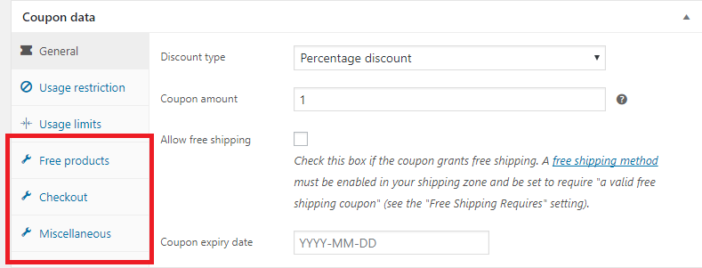

WooCommerce Extended Coupon Features
More coupon and discount options for WooCommerce.
Soft79
Created: 2014-08-30
Latest update: 2018-07-08
WooCommerce Extended Coupon Features is an easy-to-use WordPress / WooCommerce plugin that adds functionality to the WooCommerce coupon system.
The functionality is conveniently integrated to the standard WooCommerce Edit Coupon panel therefore the plugin is extremely easy to use.

What can be achieved with this plugin?
- Create discounts that will automatically be applied to the customer’s cart when certain conditions are met.
- Extended coupon restrictions
- Restrict coupon by shipping method,
- Restrict coupon by payment method,
- Restrict coupon by customer credentials or customer role
- Restrict coupon by combinations of products (e.g. buy both A and B and get 20% off!)
- Restrict coupon by amount of matching products (e.g. buy three products from category C and get a free product!)
- Apply coupon using an url
- (PRO) Give away free products
- (PRO) BOGO (Buy One Get One)
- (PRO) Limit product discount to: One per order line, cheapest product or cheapest order line